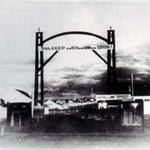

Prisoner: Lev Kopelev
“In prison we used to be afraid of informers and talked about them in whispers. Here in the camp we spoke of them out loud. The lowest of all the minions of the mighty state, as helpless and humiliated as the rest of us, and often as falsely accused and as unfairly sentenced, they were nevertheless the indispensable cogs of the cruel punitive machine. They served for the sake of the little handouts the machine threw their way, and they served out of fear.”

Gateway to Mines at Vorkuta
Sexual Violence
Prisoners faced the constant threat of rape, both homosexual and heterosexual.
“[A]n excited group of prisoners gathered around a bench next to the wall,” recalled Janusz Bardach. “Those in the back row were jumping up, trying to see over the heads and shoulders of those in front, who were shouting obscenities and holding their penises….A young man lay on his stomach [in the baths], and another man lay on top of him, embracing him around the chest and moving his hips back and forth. His back was tattooed with shackles, chains, and the popular Soviet slogan ‘Work is an act of honor, courage, and heroism.’ On both sides were trumpeting angels. He breathed heavily, while the young man underneath moaned and cried out. The spectators shouted. I caught sight of the young man’s grimacing face.”
In this excerpt from Stolen Years , Yelena Glinka describes gang rape on a ship transporting prisoners to the Gulag.
Listen to the sound or read the transcript below.
We were taken to this ship. We were marching, five abreast, as always, in columns. Five abreast, surrounded on all sides by guards, guards dogs, German shepherds. All around, guards with machine guns.
They loaded us aboard, and the first thing that happened was that female criminals—the people from the criminal underworld—began to rob us of our own clothes. They made the women strip. The women resisted, they yelled, they batted. It got so bad, that if the criminals liked your underwear, they made you sleep naked—naked—and tossed you some flea infested rags, in return.
The prisoners in one of the men’s holds found a pickaxe. They pierced a whole through the wall—into the women’s hold with a pickaxe. And the men—the criminals began filling the women’s hold, and then they gang raped the women.
Movie Transcription
We were taken to this ship. We were marching, 5 abreast, as always, in columns. 5 abreast, surrounded on all sides by guards, guards dogs, German shepherds. All around, guards with machine guns. They loaded us aboard, and the first thing that happened was that female criminals—the people from the criminal underworld—began to rob us of our own clothes. They made the women strip. The women resisted, they yelled, they batted. It got so bad, that if the criminals liked your underwear, they made you sleep naked—naked—and tossed you some flea infested rags, in return. The prisoners in one of the men’s holds found a pick axe. They pierced a whole through the wall—into the women’s hold with a pick axe. And the men—the criminals began filling the women’s hold, and then they gang raped the women.